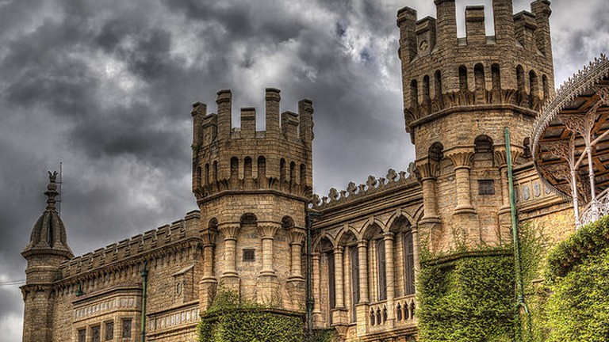

Bangalore (Bengaluru), also known as the Silicon Valley of the south, is a perfect example of peaceful coexistence. Recent years have seen Bengaluru develop and grow exponentially, while staying true to its roots. Despite its gradual metamorphosis into a concrete jungle filled with corporates and high-end pubs, Bengaluru remains a tourist hub with several million tourists flocking to see the various sights in and around the city every year. The cosmopolitan city of Bangalore is one of the most progressive cities in India that is blessed with a year-round balmy climate. IT moguls like Wipro and Infosys have their headquarters in the city. The bustling cosmopolitan city with an all-year-round pleasant climate has many cafes, shopping malls and restaurants for a luxurious and upscale lifestyle.Explore the culinary scene, and lots more through these blogs about Bangalore and know the best places to visit in the ‘Garden city of the South’. Bangalore is blessed with green spaces and a striking Victorian architecture that will entice you to book a trip and enjoy the beautiful facades of this city. The modern city of Bangalore will give you world-class sights, quirky cafes, and top notch dining experiences. What’s more?
|

|
Planning a quick getaway with your family or friends? Whether it’s just to stay away from the hustle and bustle of the city, spend quality time with your loved ones or even have a chilled out weekend with old college buddies, hill stations are the perfect option, offering you the best that nature has to offer. And if you happen to be living in Bangalore, there’s really no shortage of hill destinations. Here, one can choose to take a long stroll through the beautiful Cubbon Park, shop in the many malls or street markets or hop into one of the many acclaimed breweries for a cold and refreshing drink. There are a huge number of beautifully decorated parks in the city that are ideal for going on a morning stroll or a jog. One walk through the 300-acre Cubbon Park, or the botanical gardens of Lalbagh, and you'll know precisely why Bangalore is so famously called India's 'Garden City'. Aside from the central business and commercial districts (and the roads leading up to them), the neighbourhoods of Bangalore are mostly quiet and serene, especially the older parts of the city like Jayanagar and J.P Nagar. |
-Just a guy who travells and shares his experience